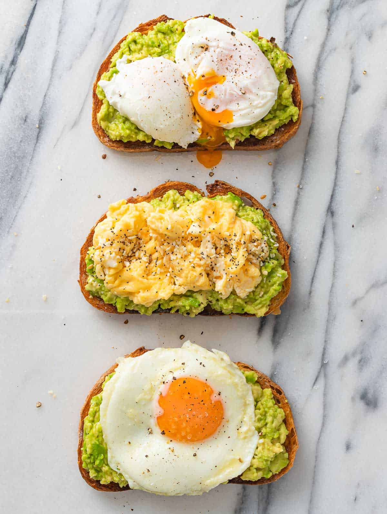

Avocado Toast

Description
This Avocado Toast with Egg is packed with proteins, healthy fats and nutrients and it’s made in less than 10 minutes. You can’t go wrong with this recipe and it can be enjoyed for breakfast, snack, lunch or even dinner.
There’s nothing as delicious or simple as avocado toast. Avocados are so nutritious and delicious but nothing beats a creamy avocado spread over toasty crunchy bread! If you haven’t tried avocado toast yet, then you’re missing out. This 3 way avocado toast with eggs is all you need.
Ingredients
- Bread — to be toasted. Any kind you prefer.
- Black pepper- fresh cracked black pepper is the best on avocado toast.
- Avocados — we love Hass avocados to make avocado toast with.
- Lemon-for the avocados.
- Salt — we like flakey salts for avocado toast.
- Red Pepper Flakes– add a kick of spice.
- Eggs- Cooked the way you prefer to serve it.
Steps
- In a non stick skillet, melt 1-2 teaspoons of butter over low heat. In a bowl, crack an egg and whisk it well. Add some salt and pepper to taste. Pour in the whisked eggs into the skillet.
- As it sets, move the egg with your spatula from side to side to form large, soft curds. Cook until full cooked, but not dry.
- Top your avocado toast with the egg and sprinkle some pepper flakes, spices or topping of your choice.